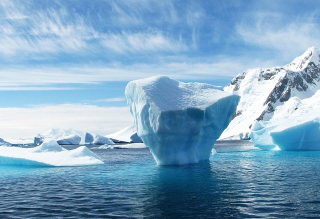
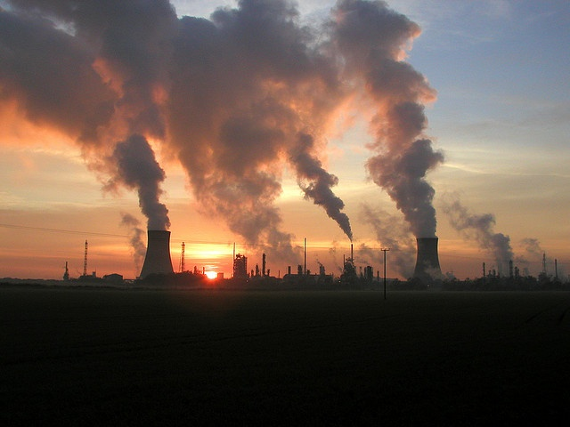

<section class="climate-env">
    <div class="container">
      <h1>Environnement Climatique : Un Défi Global</h1>
      
      <!-- Changements Climatiques Section -->
      <div class="content-section">
        <h2>Changements Climatiques : Une Réalité Inquiétante</h2>
        <p>Les changements climatiques, caractérisés par une augmentation des températures globales, la fonte des calottes glaciaires, et une fréquence accrue de phénomènes météorologiques extrêmes, posent des défis majeurs pour l'ensemble de l'écosystème terrestre. Ces perturbations, largement attribuées aux activités humaines telles que la combustion de combustibles fossiles et la déforestation, ont des répercussions profondes sur la biodiversité, les ressources en eau, et la sécurité alimentaire mondiale.</p>
        
      </div>
  
      <!-- Causes et Conséquences Section -->
      <div class="content-section">
        <h2>Causes et Conséquences</h2>
        <p>Les gaz à effet de serre, tels que le CO2, sont les principaux responsables du réchauffement climatique. Ces gaz, en s'accumulant dans l'atmosphère, créent une couverture qui retient la chaleur solaire, entraînant ainsi un réchauffement planétaire. Les conséquences sont variées et s'étendent des vagues de chaleur extrêmes aux ouragans dévastateurs, affectant non seulement l'environnement naturel mais aussi les sociétés humaines, à travers des impacts sur la santé, l'économie, et même la géopolitique.</p>
        
      </div>
  
      <!-- Solutions et Innovations Section -->
      <div class="content-section">
        <h2>Solutions et Innovations</h2>
        <p>Face à ces défis, un éventail de solutions s'offre à nous. Au niveau global, les accords tels que l'Accord de Paris visent à réduire les émissions de gaz à effet de serre et à promouvoir le développement durable. Au niveau local, des initiatives pour augmenter l'efficacité énergétique et développer des sources d'énergie renouvelables se multiplient. Sur le plan individuel, des gestes quotidiens comme le recyclage, l'adoption de modes de transport durables, et la réduction de la consommation de viande contribuent significativement à la réduction de l'empreinte carbone.</p>
        
      </div>
  
      <!-- Conclusion Section -->
      <div class="content-section">
        <h2>Conclusion</h2>
        <p>Le défi climatique nécessite une action coordonnée et globale. Les avancées technologiques, la coopération internationale, et l'engagement citoyen sont les clés d'un avenir plus durable. En agissant maintenant, nous pouvons façonner un monde qui respecte l'équilibre climatique et préserver notre planète pour les générations futures.</p>

        <a href="https://climate.ec.europa.eu/climate-change/consequences-climate-change_fr#:~:text=Les%20principales%20cons%C3%A9quences%20sont%20la,et%20les%20vagues%20de%20chaleur.
        ">POUR PLUS D'INFORMATION</a>
    </div>
    </div>
  </section>
  